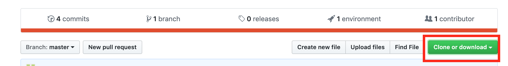

まずはGitHubのページでGitHubのアカウントを作る。
ホームディレクトリにフォルダを作るためにGit Bashに「mkdir mygit」と入力するとmygitというフォルダが作成される。
githubの右上にある+マークをクリックし、New Repositoryをクリックし、新しいリポジトリーを作る。
「doyolab」というリポジトリーを作成する。

リポジトリーのSettingsから下記の設定をします。

githubのdoyolabというリポジトリーの中で下記のボタンを押し、リポジトリーのURLをコピーする。 
Git Bashを開いて、「cd mygit」のコマンドでmygitフォルダに移動する。
ターミナルで下記のコマンドを入力し、クローンを作成してください。(URLは上でコピーしたURLです。)
git clone リポジトリのURL
mygitの中にdoyolabというフォルダができて、doyolabフォルダの中にREADME.mdファイルが入っていれば成功！